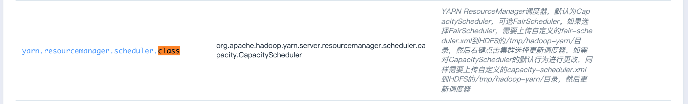

Hadoop 使用指南
统计单词次数
运行 Hadoop 测试程序，统计文件中单词出现的次数
cd /opt/hadoop
bin/hdfs dfs -mkdir /input
bin/hdfs dfs -put etc/hadoop/* /input
bin/hdfs dfs -ls /input
bin/hadoop jar share/hadoop/mapreduce/hadoop-mapreduce-examples-<hadoop_version>.jar wordcount /input /output
bin/hdfs dfs -cat /output/part-r-00000
Benchmark 性能基准测试
HDFS 分布式 I/O 读写的速度/吞吐率
Hadoop 官方的 Benchmark 性能基准测试，测试的是 HDFS 分布式 I/O 读写的速度/吞吐率，依次执行下列命令：
cd /opt/hadoop
# 使用6个 Map 任务并行向 HDFS 里6个文件里分别写入 1GB 的数据
bin/hadoop jar share/hadoop/mapreduce/hadoop-mapreduce-client-jobclient-<hadoop_version>-tests.jar TestDFSIO -write -nrFiles 6 -size 1GB
# 使用6个 Map 任务并行从 HDFS 里6个文件里分别读取 1GB 的数据
bin/hadoop jar share/hadoop/mapreduce/hadoop-mapreduce-client-jobclient-<hadoop_version>-tests.jar TestDFSIO -read -nrFiles 6 -size 1GB
# 清除以上生成的数据
bin/hadoop jar share/hadoop/mapreduce/hadoop-mapreduce-client-jobclient-<hadoop_version>-tests.jar TestDFSIO -clean
您能看到 HDFS 每秒读写文件速度，以及吞吐量的具体数值。
大文件内容的排序
Hadoop 官方的 Benchmark 性能基准测试，测试的是大文件内容的排序，依次执行下列命令：
cd /opt/hadoop
# 生成1000万行数据到 /teraInput 路径中
bin/hadoop jar share/hadoop/mapreduce/hadoop-mapreduce-examples-<hadoop_version>.jar teragen 10000000 /teraInput
# 将/teraInput 中生成的1000万行数据排序后存入到 /teraOutput 路径中
bin/hadoop jar share/hadoop/mapreduce/hadoop-mapreduce-examples-<hadoop_version>.jar terasort /teraInput /teraOutput
# 针对已排序的 /teraOutput 中的数据，验证每一行的数值要小于下一行
bin/hadoop jar share/hadoop/mapreduce/hadoop-mapreduce-examples-<hadoop_version>.jar teravalidate -D mapred.reduce.tasks=8 /teraOutput /teraValidate
# 查看验证的结果
bin/hdfs dfs -cat /teraValidate/part-r-00000
以 Hadoop 代理用户运行 MapReduce 和 Spark on YARN job
本场景将 root 设置为代理用户，并在 root 用户下模拟用户 ubuntu 提交 job。
- 通过如下配置参数配置 Hadoop 代理用户及其所能代理的 hosts 和 groups ，配置 root 为 proxyuser，该用户能代理任意 host 中任意 group 内的用户：

hosts 或 groups 中填写* 代表任意 host 或任意 group 。 hosts 和 groups 中也可以填写以逗号分割的 host name/ip 或者 group 名。详见 hadoop 官方文档Proxy user setting
- root 用户下创建以 ubuntu 用户运行 job 所需的 HDFS 目录及权限。
/opt/hadoop/bin/hdfs dfs -mkdir -p /user/ubuntu/
/opt/hadoop/bin/hdfs dfs -chown -R ubuntu:ubuntu /user/ubuntu/
- 设置要代理的是哪个用户，此处是 root 用户要代理 ubuntu ，所以设为 ubuntu。
export HADOOP_PROXY_USER=ubuntu
- 运行 MapReduce job。
cd /opt/hadoop
bin/yarn jar share/hadoop/mapreduce/hadoop-mapreduce-examples-<hadoop_version>.jar pi 16 10000
- 运行 Spark on YARN job。
cd /opt/spark
bin/spark-submit --master yarn --deploy-mode client examples/src/main/python/pi.py 100
- 查看 YARN applications UI 页面，可以看到虽然是在 root 用户下提交的 job ，但是 user 都显示为 ubuntu。

更新自定义 YARN 调度器
YARN 支持两种调度器 CapacityScheduler（默认）和 FairScheduler。 为了支持用户更多自定义调度器的需求，QingMR 支持用户上传自定义调度器，步骤如下：
- 自定义 CapacityScheduler capacity-scheduler.xml 或者 FairScheduler fair-scheduler.xml（文件名必须为 capacity-scheduler.xml 或者 fair-scheduler.xml）
- 将这两个自定义调度器上传至 HDFS 的 /tmp/hadoop-yarn/ 目录
- 右键点击集群，选择
自定义服务，点击更新调度器，选择主节点，点击提交
- 在配置参数页面切换到相应调度器

注意
如果更新的自定义调度器和配置参数里 yarn.resourcemanager.scheduler.class 类型一致，则需要切换到另一种类型的调度器，保存设置后，再切换回来重新保存以达到重启集群使新的自定义调度器生效的目的。
例如：自定义的调度器为 capacity-scheduler.xml ，上传这个文件到 HDFS 并更新调度器后，因 yarn.resourcemanager.scheduler.class 也是 CapacityScheduler ，为了使得新的 capacity-scheduler.xml 生效，需要在配置参数页面切换 yarn.resourcemanager.scheduler.class 到 FairScheduler ，保存设置后再切换到 CapacityScheduler ，然后再次保存设置。
YARN log 收集
QingMR 支持将 YARN log 收集到 HDFS 指定目录，并可指定保持时间、保持目录等，可在配置参数页面配置。

控制 HDFS、YARN 占用的内存
- YARN Resource Manager 进程运行在主节点上。
- HDFS datanode 以及 YARN NodeManager 进程都运行在从节点上。
- 可通过如下参数配置各个进程最大占用的内存。
YARN 及 HDFS 进程最大占用内存

MapReduce 中使用 LZO 压缩
Hadoop 从 QingMR 2.0.0 开始支持 lzo 压缩，使用时请注意以下事项：
- lzo 文件默认不支持分片，需为其添加索引文件，才能支持多个 map 并行地对 lzo 文件进行处理。
- 作业的输入格式需设置为
job.setInputFormatClass(LzoTextInputFormat.class)，该类在${HADOOP_HOME}/share/hadoop/common/lib/hadoop-lzo-0.4.20.jar中。